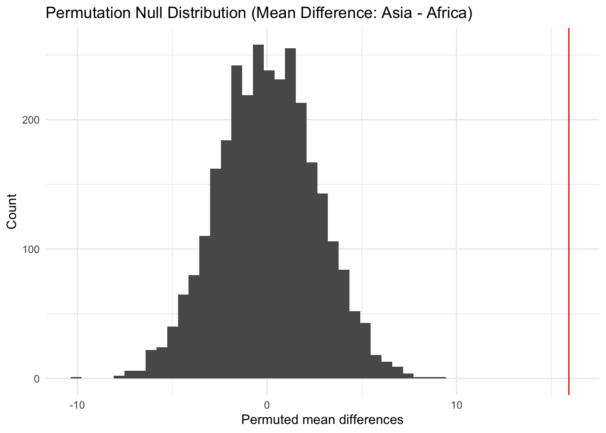

Show code
library(tidyverse)
library(gapminder)
library(purrr)
keep_2007 <- gapminder |>
filter(year == 2007, continent == "Asia" | continent == "Africa") |>
select(country, continent, lifeExp) |>
drop_na()William Walz
October 28, 2025
I test whether countries in Asia and Africa differ in their average life expectancy using data from the Gapminder dataset. I focus on the year 2007 so that each country is represented once (and because that’s the most recent in this dataset). My goal is to see if the observed difference between the two continents could have happened by random chance, or if it reflects a real difference in population health.
Null hypothesis (H₀): There is no difference in mean life expectancy between Asia and Africa in 2007.
Alternative hypothesis (Hₐ): The mean life expectancy differs between Asia and Africa in 2007.
In the code above, I load the necessary packages and filter the Gapminder dataset to include only countries from Asia and Africa in the year 2007. I then keep only the country name, continent, and life expectancy columns to make a clean dataset for my analysis (remove missing values and focus only on the variables relevant to my research question).
Above is the original data, in boxplots that show life expectancy distributions for the two continents in 2007. Each box is representing the spread of life expectancy within that continent. The plot shows that most Asian countries tend to have higher life expectancies than African countries, but there’s some overlap between the groups as well.
Why? In a permutation test, you calculate the difference in means to create a null distribution that represents what you would expect if there was not an actual difference in the groups.
# A tibble: 2 × 3
continent ave_life med_life
<fct> <dbl> <dbl>
1 Africa 54.8 52.9
2 Asia 70.7 72.4# A tibble: 1 × 2
obs_ave_diff obs_med_diff
<dbl> <dbl>
1 15.9 19.5Here, I calculate the observed difference in both mean and median life expectancy between Asia and Africa. This step gives me the actual statistic I’m testing against. In this case, the mean difference is 15.92 years and median difference is 19.47 years. These values prove that, on average, people in Asia live substantially longer than those in Africa. In a permutation test, these observed differences act as benchmarks to see how extreme they are relative to differences generated under random shuffling (the null hypothesis).
What does this do? It creates the null sampling distribution, whcih shows what differences I’d expect if continent made no real difference tolife expectancy. The function shuffle_sim randomly shuffles the continent labels, recalculates the mean and median (lifeExp) for the shuffled groups, and returns the differences. I repeated this 3,000 times with map to simulate what random differences might look like if there were not a relationship between continent and life expectancy.
#shuffle_sim
shuffle_sim <- function(rep, data) {
data |>
select(continent, lifeExp) |>
mutate(continent_perm = sample(continent, replace = FALSE)) |>
group_by(continent_perm) |>
summarize(
ave_perm = mean(lifeExp),
med_perm = median(lifeExp),
.groups = "drop"
) |>
summarize(
mean_diff_sim = diff(ave_perm),
median_diff_sim = diff(med_perm)
) |>
mutate(rep = rep)
}
# null distribution
set.seed(123)
permut_stats <- map(1:3000, shuffle_sim, data = keep_2007) |>
list_rbind()
permut_stats |> head()# A tibble: 6 × 3
mean_diff_sim median_diff_sim rep
<dbl> <dbl> <int>
1 3.29 4.06 1
2 3.40 6.40 2
3 1.94 3.20 3
4 -4.32 -7.19 4
5 2.38 4.13 5
6 -2.55 -1.45 6#observed ave diff
permut_stats |>
ggplot(aes(x = mean_diff_sim)) +
geom_histogram(bins = 47) +
geom_vline(xintercept = observed_diffs$obs_ave_diff, color = "red") +
labs(
title = "Permutation Null Distribution (Mean Difference: Asia - Africa)",
x = "Permuted mean differences",
y = "Count"
) + theme_minimal()
The histogram above shows the null distribution of mean differences generated from the permutations. Each bar represents one possible difference that could occur by random chance if continent didn’t matter. The red line shows the observed mean difference from the real data (15.9 years). Because the red line is far to the right of almost all simulated values, the observed difference is extremely unlikely to be due to chance which provides strong evidence that the continents differ in mean life expectancy (Reject null hypothesis that (lifeExp) in Asia and Africa are not the same).
#observed med diff
permut_stats |>
ggplot(aes(x = median_diff_sim)) +
geom_histogram(bins = 47) +
geom_vline(xintercept = observed_diffs$obs_med_diff, color = "red") +
labs(
title = "Permutation Null Distribution (Median Difference: Asia - Africa)",
x = "Permuted median differences",
y = "Count"
) + theme_minimal()This second histogram shows the null distribution of median differences. Again, the red vertical line shows the observed difference in medians (19.5 years). Like the mean comparison, this value lies far beyond the range of most simulated outcomes which suggests that the difference in median life expectancy between Asia and Africa is also statistically meaningful and not arbitrary
# A tibble: 1 × 2
p_value_ave p_value_med
<dbl> <dbl>
1 0 0The p-value shows how likely it is to see a difference this large just by chance. A small p-value means the result is unlikely under the null hypothesis, suggesting a real difference between Asia and Africa.
In this project, I used a permutation simulation to test whether Asia and Africa differ in mean and median life expectancy. After 3,000 random label shuffles, the observed differences were much larger than any values from the null distribution. The p-values were 0, suggesting that the observed gap in life expectancy is absolutely not due to chance. This supports the conclusion that people in Asia generally live longer than those in Africa.
Gapminder Foundation. (n.d.). Gapminder data. Gapminder Foundation. Retrieved from Gapminder Foundation